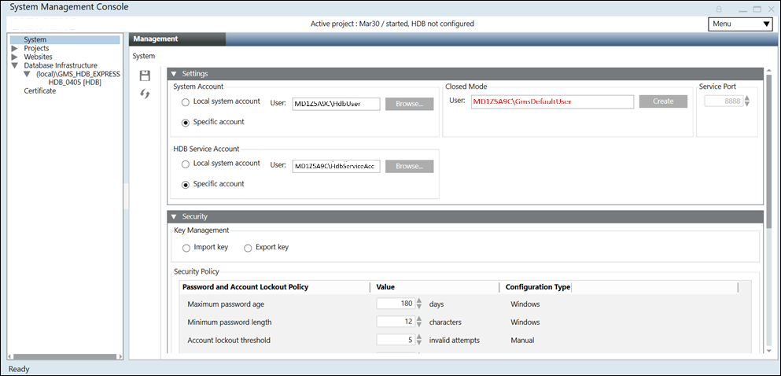

SMC System Settings
This section provides reference and background information for configuring of Desigo CC with SMC System Settings. For related procedures, see step-by-step section.

The System node is the default selection in the SMC tree of the SMC. It provides you with the following expanders.